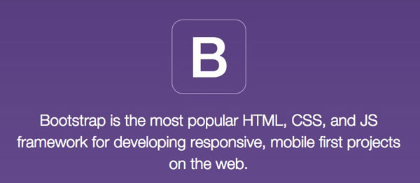
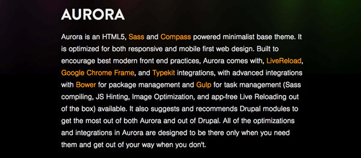

Thinking Inside and
Outside the Grid
Responsive Web Design for Drupal
Presented January 30, 2015 for the DSFederal Drupal Working Group
Jim Smith

If you're not mobile,
you're not going anywhere.
So start with mobile!
And keep it simple.
What makes it mobile?
What makes it mobile?
- Hand-held device
- Smaller screen
- Probably used in shorter sessions
- Touch interface
- Possibly slower connection
- Possibly used in a location context
Mobile apps are your competition.
Speed is your competition.
Grids are nothing new.
To be responsive,
you have to be flexible.
Grid Frameworks
Advantages
- A quick start to designing.
- Unifomity and structure in the design.
- Repeatability and maintainability.
Disadvantages
- Can be a design crutch.
- Can make all sites look the same.
- Can be hard to learn and master.
- Design specs don't always match framework.
Bootstrap

getbootstrap.com
Omega
drupal.org/project/omega
Grid Framework Similarities
- Intended for mobile first design.
- Based on a 12-column grid.
- Use predefined classes to set columns.
- Additional predefined classes for more customization.
Aurora

snugug.github.io/Aurora
Aurora differences
- Does not require specific classes for grid layout.
- Uses minimal markup.
- Effectively driven by Compass extensions.
- Third-party tools like Gulp, Yeoman, Livereload are built in.
- Organize files using BEM, SMACCS, something else? No problem.
Find your own way.